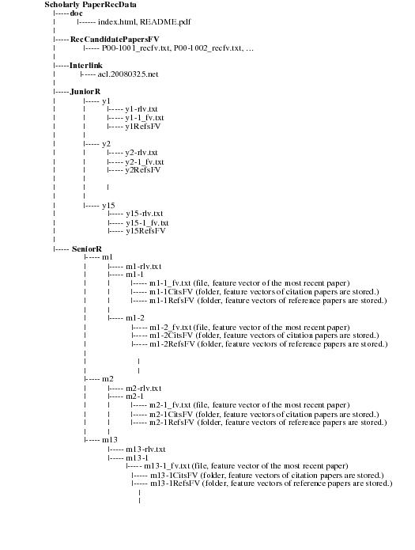

Scholarly Paper Recommendation Dataset
Introduction
Much of the world's new knowledge today is now largely captured in digital form
and archived within a digital library system. However, these trends lead to information overload,
where users find an overwhelmingly large number of publications that match their search queries
but are largely irrelevant to their latent information needs. We address this problem by providing
recommendtion results by using latent information about the user's research interests that exists
in their publication list (For further details, see the paper shown in ``Publications'').
We release our dataset used in the paper. If you are interested in recommendation of scholarly papers,
please try our dataset for your experiments!
Dataset
This dataset contains the following information:
- Feature vector of candidate papers to recommend (from ACL ARC)
- Citation and reference information about each candidate papers to recommend (from ACL ARC)
- Research interest of 15 junior researchers
- feature vectors generated from their papers in DBLP list
- Research interest of 13 senior researchers
- feature vectors generated from their papers in DBLP list
- IDs of papers relevant to junior and senior researchers' research interest
The structure of this dataset is illustrated as follows:

Doc
This folder contains the following two documents:
RecCadidatePapersFV
This folder stores feature vectors of candidate papers to recommend.
The feature vectors are generated from 597 full papers published in ACL 2000-2006,
by applying TF-IDF. The ID before "_" in each file name denotes the paper ID.
Interlink
The file "acl.20080325.net" in this folder contains citation
and reference information about ACL papers.
JuniorR
This folder includes information about 15 junior researchers.
Let i (i=1, ..., 15) be junior researcher's id.
Each folder has the following two information: feature vector of
the most recent paper (yi-1_fv.txt) and feature vectors of reference papers
in the most recent paper. The feature vector of the most recent paper is
generated from the paper in the researcher's DBLP list.
The feature vectors of reference papers are stored
in ``yiRefsFV.'' For example, when ``i=2,'' ``y2-1_fv.txt" denotes
the feature vector of the most recent paper of researcher ``y2,'' and ``y2RefsFV''
denotes the folder that stores the feature vectors of reference papers. The feature
vectors are generated using TF scheme.
In addition, all of junior researchers from y1 to y15 have IDs of paper relevant to
these researchers. ``y1-rlv.txt,'' ``y2-rlv.txt,'' ... ``y15-rlv.txt'' include IDs
of paper relevant to each researcher. These IDs correspond to those in filenames
in ``RecCandidatePapersFV'' folder described above.
SeniorR
This folder includes information about 13 senior researchers. Let j (j=1, ..., 13) be
senior researcher's id. Each folder has the information about the researcher's published paper.
When ``j=3,'' folder ``m3'' has the information about his published paper.
``m3-1'' denotes the most recent paper. ``m3-2,'' ``m3-3," ... store information about
his papers published in older days. These feature vectors are generated from the papers in the researcher's DBLP list. For example, folder ``m3-1'' has the following three information:
m3-1_fv.txt: Feature vector of the most recent paper (file)
m3-1CitsFV: Feature vector of citation papers are stored (folder)
m3-1RefsFV: Feature vector of reference papers are stored (folder)
Similarly, ``m3-2'' stores information about his paper published before ``m3-1'':
m3-2_fv.txt: Feature vector of the most recent paper (file)
m3-2CitsFV: Feature vector of citation papers are stored (folder)
m3-2RefsFV: Feature vector of reference papers are stored (folder)
The feature vectors are generated using TF scheme.
In addition, all of senior researchers from m1 to m13 have paper IDs relevant to these researchers.
``m1-rlv.txt,'' ``m2-rlv.txt,'' ... ``m13-rlv.txt'' include paper IDs relevant to each researcher.
These IDs correspond to those in file names in ``RecCandidatePapersFV'' folder described above.
Publications
Group Members